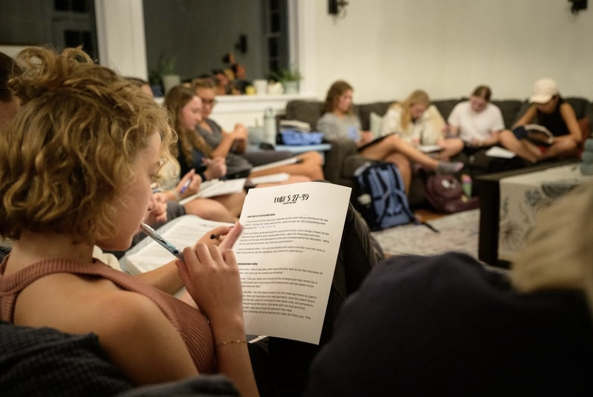

The What
Small groups are God-centered communities where students come together to study God’s Word, Worship, and bear Witness to the Gospel of Jesus, all while building close friendships that will exist throughout college and beyond.

The Why
Everyone needs a place to connect and belong. Small Groups are communities where you can form deep connections and navigate the challenges and joys of life together while simultaneously deepening your understanding of God’s word.
The How
InterVarsity operates out of four-year continuing Small Groups, meaning that the Small Group you join will stay together throughout your time in college. We want you to build friendships that last for many years to come. Groups will meet weekly for Bible study, but will also spend lots of time together outside of set meeting times. Many students end up living with their Small Group members because of the great friendships they’ve made through InterVarsity!
The When
There are Men's and Women's Small Groups that meet on different nights throughout the week, making it easy to find a Small Group that fits your schedule! On Friday nights, all Small Groups attend Large Group to fellowship with the chapter as a whole. Visit the Large Group page for more information about Large Group!